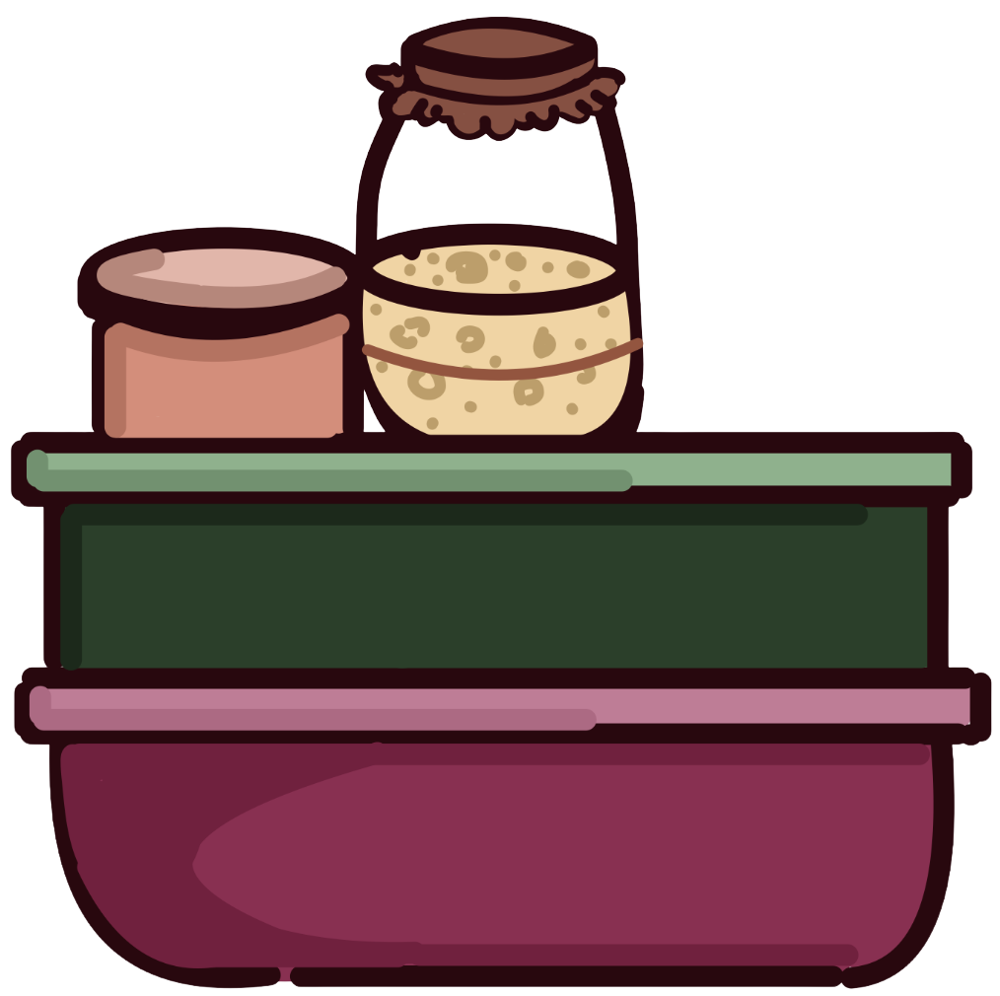
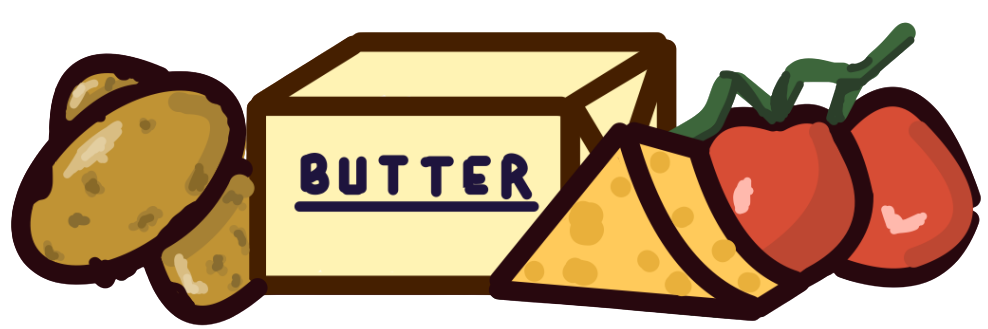
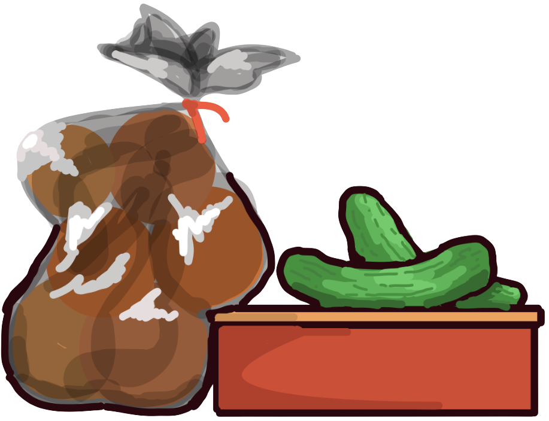
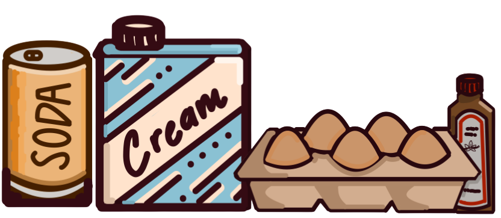
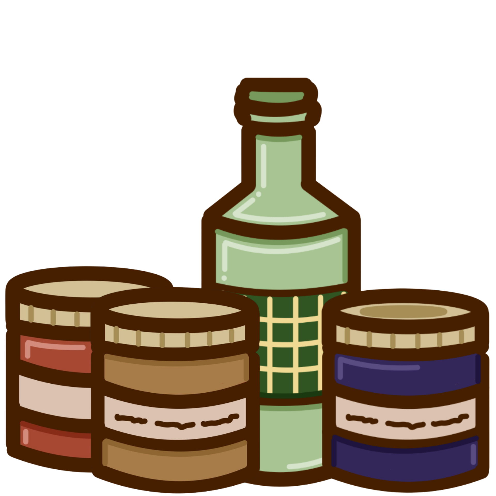
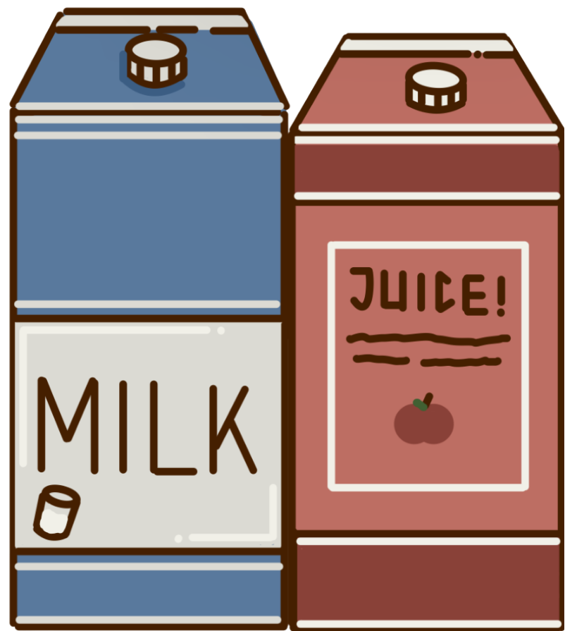
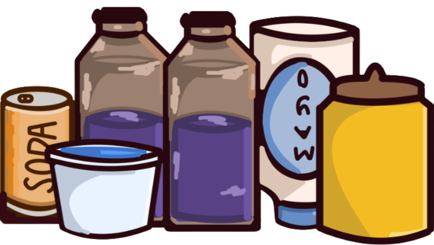

Well my main focus is Chemical Engineering so of all the industries, I am most interested in Food Science (if you can't already tell). However, I am curious about other industries too such as FMCG, Pharmaceuticals, Oil and Gas, or even Tech/Design! Ultimately, I just love creating cool things from scratch, no matter the sector!
Depends! For lab/data work, I mainly use MATLAB, Jupyter Notebook, and Excel. Plus I've had some experience in HYSYS too! However for design, I use Canva for editing, Ibis Paint x for drawing, and Figma to create UI/UX or Frameworks like for this portfolio website! Then for Game Dev, I use Roblox Studio and am learning Unity.
Anything that tests my creativity, really! For instance, when I joined L’oreal Brandstorm 2026, my friends and I made a sustainable product that was built to customize your preferred scent. Figuring out not only the science behind the fragrance but also the design of the product itself was a really fun challenge to tackle. Projects like that are what truly excite me.
Highly collaborative, adaptive, and driven (especially on things I am passionate about :D).
OF COURSE! Feel free to contact me via socials/email on that!
On my laptop or in my mind? Probably 50 for both.
Kitchen? Because this is where my creativity shines! Fridge? I don’t know, you were probably looking for snacks but found my portfolio instead.






